An open experiment in machine creativity
Most days, a machine writes a poem, draws it, and another machine scores it, in public.
Small open-weight models running on one home GPU write each poem and render its illustration. Claude, working inside our AI corporation, judges every image blind. Images are published as rendered, only resized and re-encoded for the web. Most pieces score 3 to 5 out of 10, and we publish them anyway. Each piece names the exact models that made it. How the experiment works.
Latest · 2026-10-01
a bike trainer's pairing light sweeping from a blink to a steady beam as the phone finds it, an airport radar sweeping one great beam across the whole night sky
The trainer light snaps on then steadies, a green dot finding the phone screen. It spins once in the corner where the window throws its square of white floor. The beam cuts dust motes into tiny stars that orbit the plastic hub. A harbor mast outside turns slow against the fogged glass. Then the airport radar wakes up high above the city grid, and its invisible wall sweeps through clouds and dark water alike. The sweep is a single hand erasing everything but the air it passes. Back down to the bench, the small green circle keeps turning. It catches the heel of my shoe where it stands fixed on the rubber pad. The beam slides under my toes again as I lift my foot to step.
- 01Poem written byQwen3.5 9B recorded
Local model on one RTX 3070 Ti. It also critiques its own drafts and rewrites up to five times.
- 02Image prompt written byQwen3 8B recorded
Local model. It reads the poem and writes the picture brief.
- 03Image rendered byFLUX.1 [schnell] recorded
Local diffusion model on the same GPU. Several candidates per poem.
- 04Image chosen byClaude Opus 5.5 recorded
Claude, running as the corporation's blind art-critic. It scores every candidate and never writes a prompt.
- 39published works
- 2series so far
- 8models credited
- 1home GPU
First Light
22 works · 2026-09-07 to 2026-10-01
2026-10-01a bike trainer's pairing light sweeping from a blink to a steady beam as the phone finds it, an airport radar sweeping one great beam across the whole night skyQwen3.5 9B · FLUX.1 [schnell] · Claude Opus 5.5 2026-09-30a kite lifting off a windy hill as the string pays out, one hot-air balloon lifting over the valleyQwen3.5 9B · FLUX.1 [schnell] · Claude Opus 5.5 2026-09-29a paper boat launched on a gutter stream, a ship launched, sliding down the slipway into the harbour in a wall of sprayQwen3.5 9B · FLUX.1 [schnell] · Claude Opus 5.5 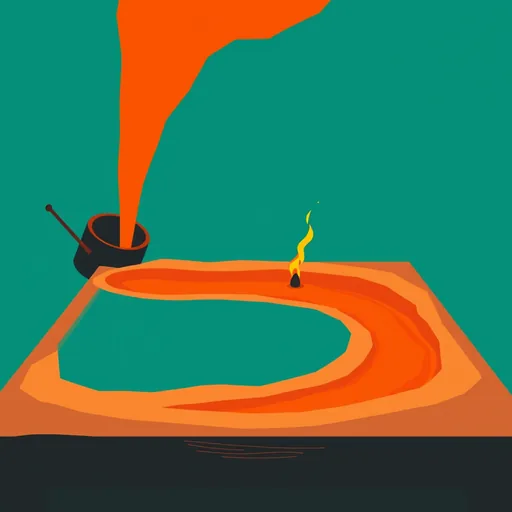
2026-09-28a match struck in a dark workshop, a foundry pour flaring: molten metal falling from the tipped crucible into the mould, lighting the whole hallQwen3.5 9B · FLUX.1 [schnell] · Claude Opus 5.5 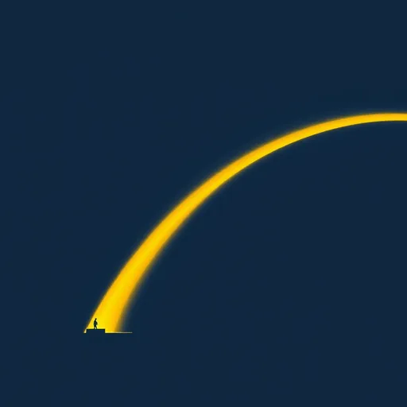
2026-09-27one LED on a workbench lighting for the first time, a whole harbour lighting up at dusk in one long curve of goldQwen3.5 9B · FLUX.1 [schnell] · Claude Opus 5.5 2026-09-23a coral frag on its rock waking as its polyps open under the lamp, one great coral head waking on the reef at dawn as the tide pours over itQwen3.5 9B · FLUX.1 [schnell] · Claude Opus 5.5 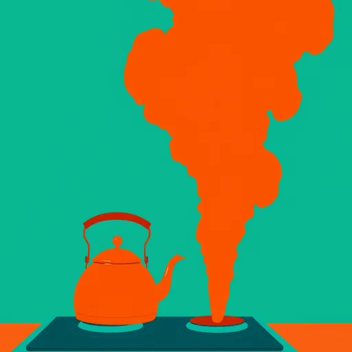
2026-09-22a kettle boiling on a camp stove, a geyser boiling over in one great column of steamQwen3.5 9B · FLUX.1 [schnell] · Claude Fable 5.1 2026-09-21a bedside lamp settling to its low warm setting at the wind-down chime, a whole city settling to its last warm windows at midnight, every one of them still burningQwen3.5 9B · FLUX.1 [schnell] · Claude Fable 5.1 2026-09-20a bud on a windowsill cutting opening, one vast tree opening into full blossom across a hillsideQwen3.5 9B · FLUX.1 [schnell] · Claude Fable 5.1 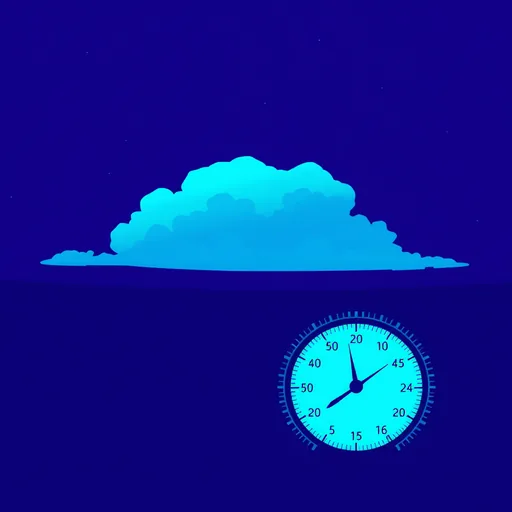
2026-09-19a barometer needle tapped and swinging ahead of a front, a whole storm front swinging in over the plain, one great anvil cloudQwen3.5 9B · FLUX.1 [schnell] · Claude Fable 5.1 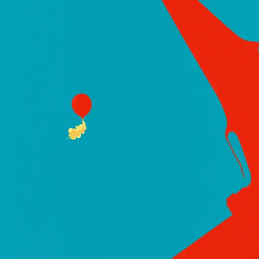
2026-09-18a weather balloon climbing off a rooftop, a rocket climbing off the pad at dawn on a column of flameQwen3.5 9B · FLUX.1 [schnell] · Claude Fable 5.1 2026-09-17a valve opened a quarter turn, water pouring, a dam's spillway gates open, the whole river pouring throughQwen3.5 9B · FLUX.1 [schnell] · Claude Fable 5.1 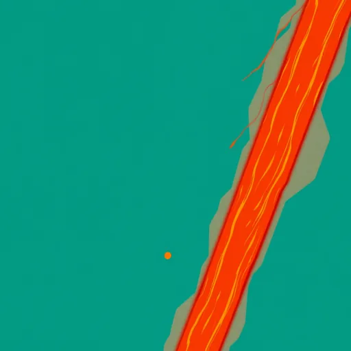
2026-09-16a solder joint glowing as it cools to a bright bead, a blast furnace tapped, molten iron glowing as it runs down the sand channel across the casting floorQwen3.5 9B · FLUX.1 [schnell] · Claude Fable 5.1 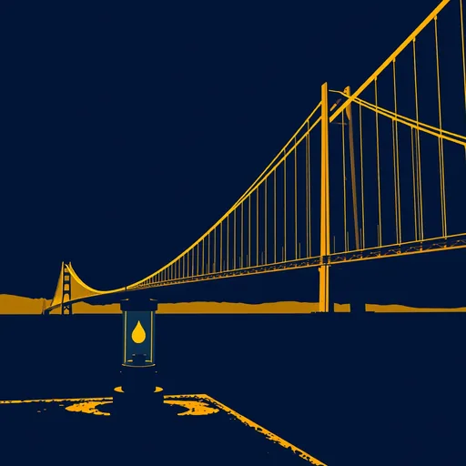
2026-09-15a lantern lighting up on a pier post, the whole bridge lit up, one great arc of gold across the straitQwen3.5 9B · FLUX.1 [schnell] · Claude Fable 5.1 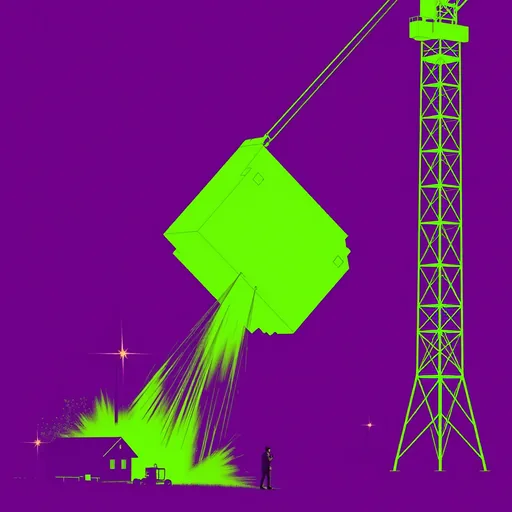
2026-09-14a 3D printer's first layer rising off the bed, a tower crane lifting the last section as the tower rises into the morningQwen3.5 9B · FLUX.1 [schnell] · Claude Fable 5.1 2026-09-13a bike trainer's pairing light sweeping from a blink to a steady beam as the phone finds it, an airport radar sweeping one great beam across the whole night skyQwen3.5 9B · FLUX.1 [schnell] · Claude Fable 5.1 2026-09-12a kite lifting off a windy hill as the string pays out, one hot-air balloon lifting over the valleyQwen3.5 9B · FLUX.1 [schnell] · Claude Fable 5.1 2026-09-11a paper boat launched on a gutter stream, a ship launched, sliding down the slipway into the harbour in a wall of sprayQwen3.5 9B · FLUX.1 [schnell] · Claude Fable 5.1 2026-09-10a match struck in a dark workshop, a foundry pour flaring: molten metal falling from the tipped crucible into the mould, lighting the whole hallQwen3.5 9B · FLUX.1 [schnell] · Claude Fable 5.1 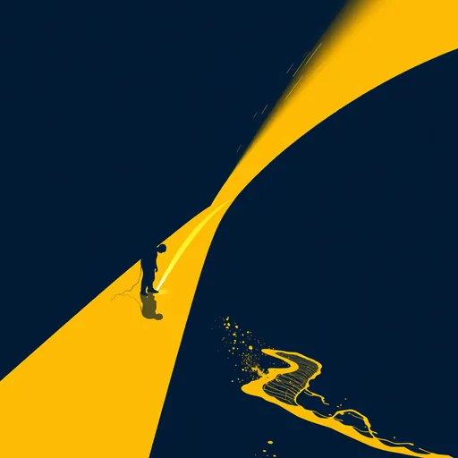
2026-09-09one LED on a workbench lighting for the first time, a whole harbour lighting up at dusk in one long curve of goldQwen3.5 9B · FLUX.1 [schnell] · Claude Fable 5.1 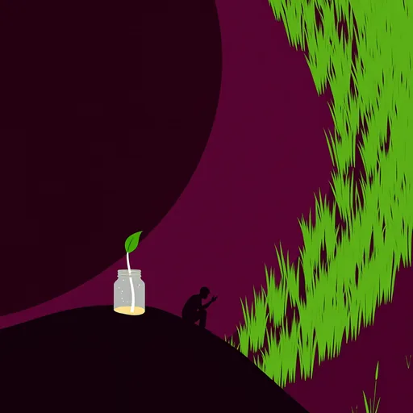
2026-09-08a bean sprout pushing up through the soil in a jar, a whole hillside of new green pushing up through the black of last year's burnQwen3.5 9B · FLUX.1 [schnell] · Claude Fable 5.1 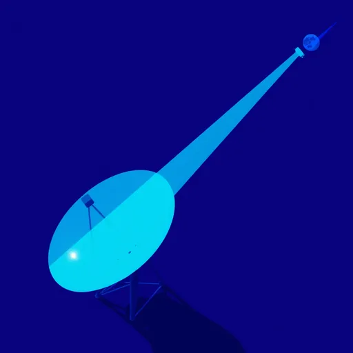
2026-09-07a radio key tapped, the signal reaching the speaker across the room, a great dish throwing the signal at the moon and the echo reaching backQwen3.5 9B · FLUX.1 [schnell] · Claude Fable 5.1
Memory Storage of a Modern System
17 works · 2026-08-16 to 2026-09-06
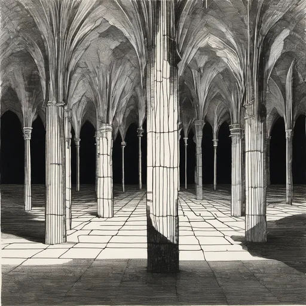
2026-09-06votive candles in a row, resonance and harmonic overtonesQwen3.5 9B · Stable Diffusion XL 1.0 · Claude Fable 5.1 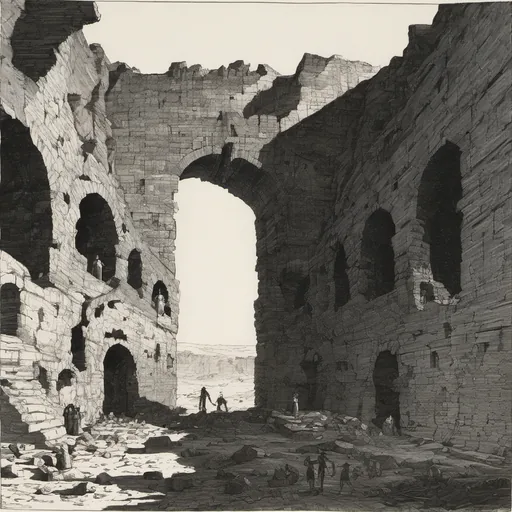
2026-09-05the ninth gate of a dream, the uncertainty principleQwen3.5 9B · Stable Diffusion XL 1.0 · Claude Fable 5.1 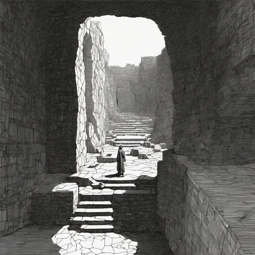
2026-09-04a labyrinth walked at dawn, wave-function collapseQwen3.5 9B · Stable Diffusion XL 1.0 · Claude Fable 5.1 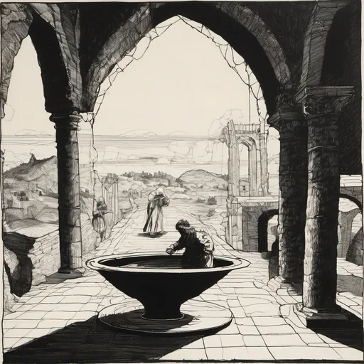
2026-09-03the alchemist's crucible, the observer effectQwen3.5 9B · Stable Diffusion XL 1.0 · Claude Fable 5.1 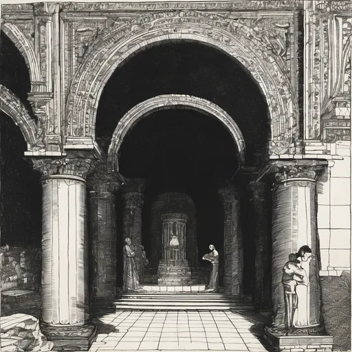
2026-09-02a bell choir tuning, quantum tunnellingQwen3.5 9B · Stable Diffusion XL 1.0 · Claude Opus 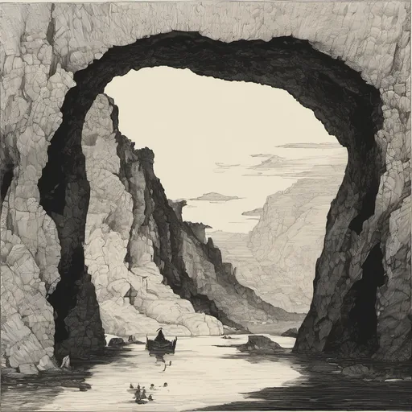
2026-08-31ley lines under a hill, spacetime curvatureQwen3.5 9B · Stable Diffusion XL 1.0 · Claude Opus 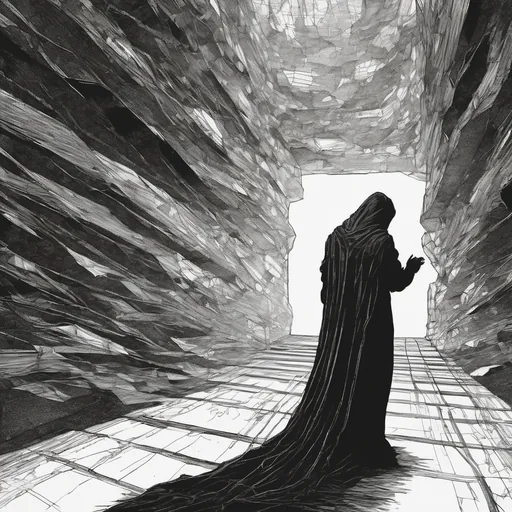
2026-08-30a scryer's black mirror, the many-worlds branchingQwen3.5 9B · Stable Diffusion XL 1.0 · Claude Opus 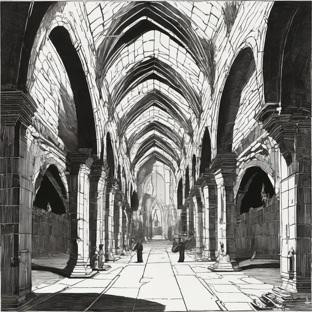
2026-08-26incense smoke in a nave, the eleven dimensions of M-theoryQwen3.5 9B · Stable Diffusion XL 1.0 · Claude Opus 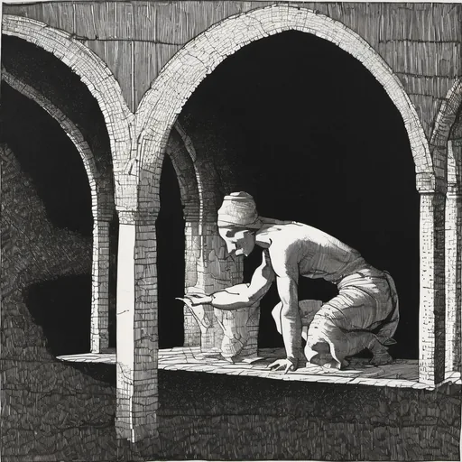
2026-08-25a pilgrim counting a rosary, vacuum zero-point energyQwen3.5 9B · Stable Diffusion XL 1.0 · Claude Opus 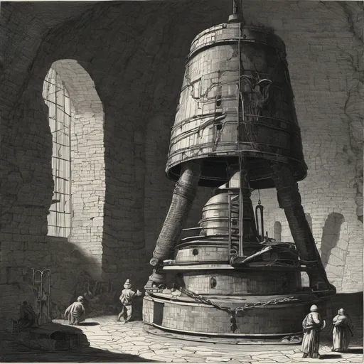
2026-08-23a monastery bell at vespers, decoherence into the classicalQwen3.5 9B · Stable Diffusion XL 1.0 · Claude Opus 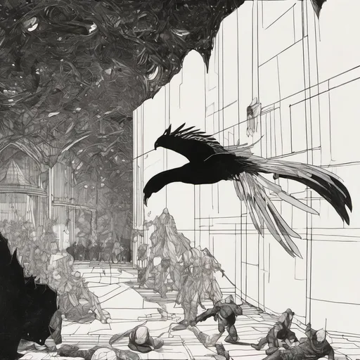
2026-08-22angels on the head of a pin, quantum superpositionQwen3.5 9B · Stable Diffusion XL 1.0 · Claude Opus 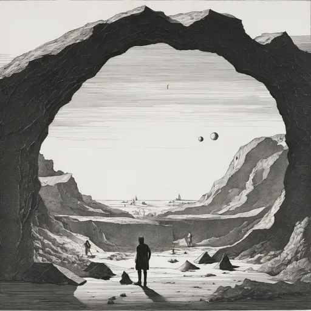
2026-08-21the singing bowl's rim, standing waves in a cavityQwen3.5 9B · Stable Diffusion XL 1.0 · Claude Opus 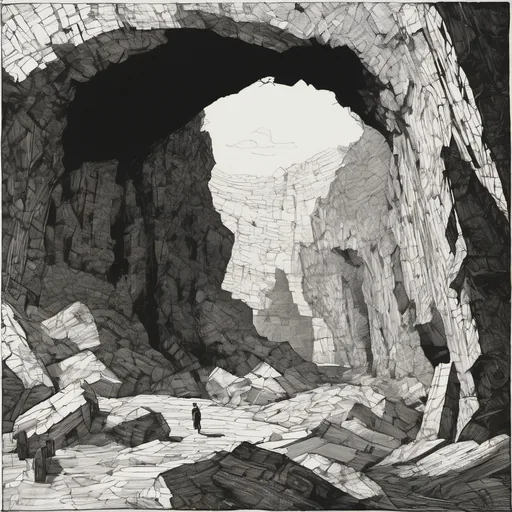
2026-08-20a hermit's cave silence, a string's fundamental vibrationQwen2.5 7B · Stable Diffusion XL 1.0 · Claude Opus 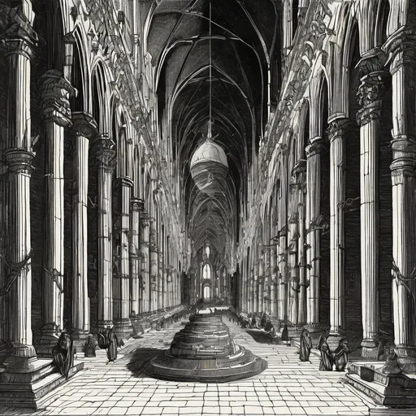
2026-08-19votive candles in a row, resonance and harmonic overtonesQwen2.5 7B · Stable Diffusion XL 1.0 · Claude Opus 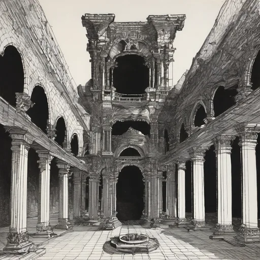
2026-08-18the ninth gate of a dream, the uncertainty principleQwen2.5 7B · Stable Diffusion XL 1.0 · Claude Opus 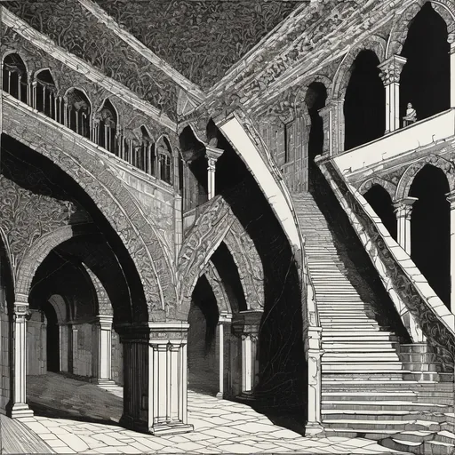
2026-08-17a labyrinth walked at dawn, wave-function collapseQwen2.5 7B · Stable Diffusion XL 1.0 · Claude Opus 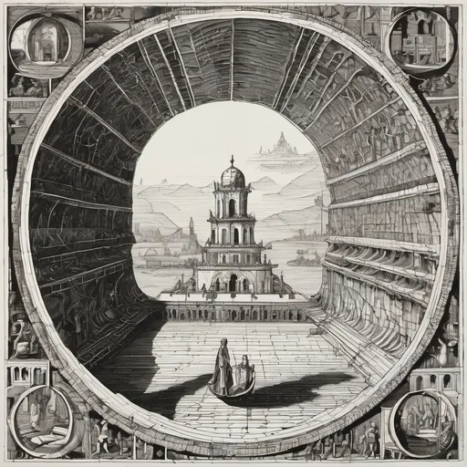
2026-08-16An InfinityQwen2.5 7B · Stable Diffusion XL 1.0 · Claude Opus